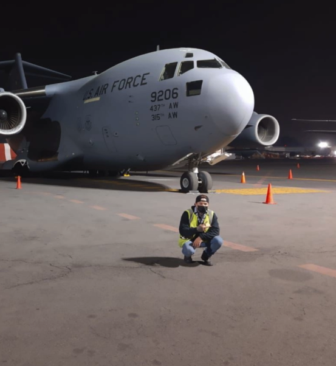

Domina el inglés y conquista el mundo como nuestros estudiantes.
¡Inspirate con sus historias y Conviértete en nuestro próximo embajador!



¡Inspirate con sus historias y Conviértete en nuestro próximo embajador!
Mi primer viaje internacional fue a los 21 años; Soy Lic. en comercio internacional y ostento dos doctorados.
Gracias a Express Learning Online logré interactuar con diversas culturas en Europa Central y el Caribe. Cada conversación con colegas, cada acuerdo cerrado y cada nueva amistad me brindaron habilidades que ELON me ayudó a pulir. Derribar las barreras de la comunicación me permitió conectar con mis superiores y compañeros.


.png)
Validado por:
Trinity College London
Mi primer viaje internacional fue a los 19 años. Soy Lic. en Ciencias de la Comunicación.
Comencé mi internacionalización en Japón, hice un voluntariado en Brasil, trabajé en el área de Turismo y actualmente ejerzo la comunicación digital. Hablar inglés me permite ser viajera, fotógrafa y emprendedora. Conozco Sudamérica, Norteamérica y Asia, gracias a estudiar y certificar el idioma inglés en Express Learning Online.


Validado por:
Trinity College London
Mi primer viaje internacional fue a los 19 años. Soy Licenciada en Negocios Internacionales.
Estudiar inglés mientras estudiaba la preparatoria me permitió trabajar en una empresa internacional de tecnología. Ahora viajo por trabajo y por placer a países de Norteamérica, Centroamérica, Sudamérica, las Antillas y Europa Central. Aprender inglés y certificarme en Express Learning Online ha sido la mejor inversión en tiempo y dinero.


Validado por:
Oxford University
Mi primer viaje internacional fue a los 15 años mientras estudiaba la Ingeniería en Biotecnología.
Estudié inglés británico y americano en Express Learning Online. Utilizo el idioma para participar en ponencias internacionales, representé a Latinoamérica en la categoría de "Aspiring Teen Award" en la sexta edición de los Women in Tech Global Awards, en Dubái, Emiratos Árabes. El nivel de inglés que adquirí en ELON me ha permitido conversar con investigadores y estudiantes de todo el mundo.

Validado por:
Trinity College London
Mi primer viaje internacional fue en enero del 2024. Soy Profesional Técnico en Sistemas Electrónicos de Aviación.
En Express Learning Online aprendí a comunicarme perfectamente hasta lograr certificarme internacionalmente. Me permitió viajar a República Dominicana por cuestiones laborales y ser contratado como profesor. Gracias a la experiencia que he acumulado durante estos años he logrado obtener visa de trabajo en Victorville, California, Estados Unidos.

Validado por:
Trinity College London
Mi primer viaje internacional fue a los 56 años; soy estudiante de secundaria.
He logrado colocarme en un trabajo en Estados Unidos que me permitirá tener un verdadero desarrollo personal y profesional. Me queda claro que la edad no es un impedimento para lograr éxitos en la vida, si se cuenta con docentes de la calidad de los que integran el equipo de Express Learning Online, siempre brindando todo su apoyo a sus estudiantes de principio a fin.
Validado por:
Oxford University
Mi primer viaje internacional fue a los 15 años y actualmente estoy estudiando para ser piloto comercial.
Mejoro mi inglés en Express Learning Online, lo cual es necesario para mi carrera. Disfruto viajar por placer al extranjero para conocer diferentes culturas y tradiciones. Aprender inglés me permite disfrutar más de mis clases y comprender la importancia de adquirir una segunda lengua desde joven.

Validado por:
Oxford University
Mi primer viaje internacional fue a Canadá. Soy Licenciada en Innovación de Negocios.
Agradezco a Express Learning Online por sus increíbles enseñanzas en el idioma inglés. Tuve la oportunidad de estudiar en Canadá y conocer personas. Actualmente trabajo para la cadena hotelera Nickelodeon y todo esto gracias a ELON, que me ayudó a tener confianza y me brindó las herramientas necesarias para alcanzar mis sueños.